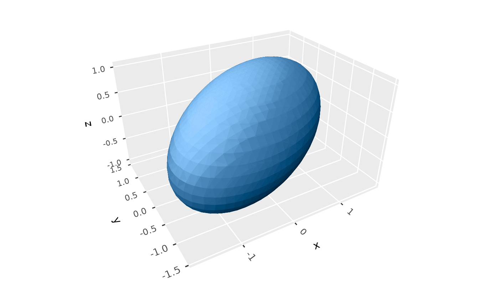
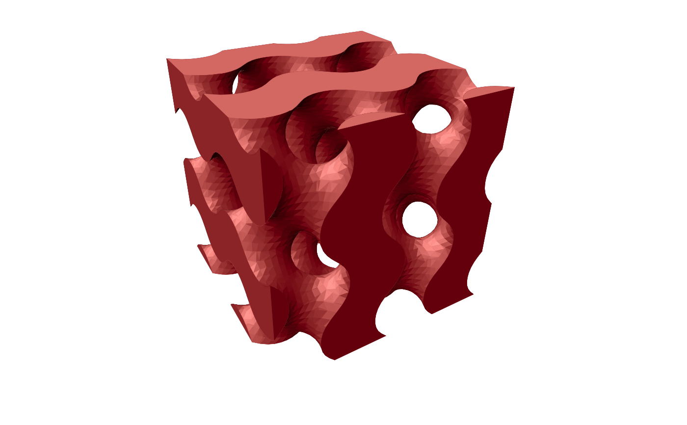

Draws isosurfaces of a function of three variables, i.e. the surfaces on which
it equals given values. By default it draws the implicit surface where the
function equals zero, enclosing the region where it's negative, so that e.g.
function(x, y, z) x^2 + y^2 + z^2 - 1 gives a unit ball. This is to geom_isosurface_3d() what
geom_function_3d() is to geom_surface_3d(): rather than reading a field
from gridded data, it evaluates a function over a grid spanning a given
domain. Surfaces are triangulated with the marching cubes algorithm.
Usage
geom_isofunction_3d(
mapping = NULL,
data = ensure_nonempty_data,
stat = StatIsofunction3D,
position = "identity",
...,
fun = NULL,
xlim = NULL,
ylim = NULL,
zlim = NULL,
n = 30,
levels = 0,
inside = "below",
cap = FALSE,
light = NULL,
cull_backfaces = FALSE,
scale_depth = TRUE,
na.rm = FALSE,
show.legend = NA,
inherit.aes = TRUE
)
stat_isofunction_3d(
mapping = NULL,
data = ensure_nonempty_data,
geom = GeomIsosurface3D,
position = "identity",
...,
fun = NULL,
xlim = NULL,
ylim = NULL,
zlim = NULL,
n = 30,
levels = 0,
inside = "below",
cap = FALSE,
light = NULL,
cull_backfaces = FALSE,
scale_depth = TRUE,
na.rm = FALSE,
show.legend = NA,
inherit.aes = TRUE
)Arguments
- mapping
Set of aesthetic mappings created by
aes().- data
Not needed, as the layer draws a function rather than data.
- stat
The statistical transformation to use on the data. Defaults to
StatIsofunction3D.- position
Position adjustment, defaults to "identity". To collapse the result onto one 2D surface, use
position_on_face().- ...
Other arguments passed on to the layer function (typically GeomPolygon3D), such as aesthetics like
colour,fill,linewidth, etc. Unlesscolouris mapped or set, opaque polygons are outlined in their fill color, which hides the seams between adjacent polygons, and translucent polygons aren't outlined. These outlines are lit along with the fill, whatever thefillandcolorarguments oflight(). Contours and ridgelines are the exception, with outlines of their own.- fun
A function of
x,y, andz, taking vectors of each and returning a vector of values.- xlim, ylim, zlim
Length-2 numeric vectors giving the domain over which to evaluate
fun. IfxlimorylimisNULL, the range of the plot's scale for that axis is used, as set by other layers or by limits. IfzlimisNULL, limits set on the plot's z scale are used, e.g. withzlim(); the range of other layers' data isn't yet known when the function is evaluated.- n
Number of grid points along each axis at which
funis evaluated. Larger values give smoother surfaces, at a cost in time that grows with its cube.- levels
Numeric vector of values of
funat which to draw isosurfaces, one surface per value. Defaults to0, the implicit surfacefun(x, y, z) = 0.- inside
Which side of each surface is its inside, the region it encloses:
"below"(the default) for wherefunis less than the level, following the usual convention for implicit surfaces, or"above"for where it's greater. Surfaces face outward from their insides, which determines wherecapadds caps, which trianglescull_backfacesremoves, and the direction of the computed normals.- cap
Logical indicating whether to close surfaces with flat caps where they meet the edges of the domain, or limits set on the plot's scales, so that they show solid cross sections rather than being left open there. Defaults to
FALSE.- light
A lighting specification object created by
light(),light("none")or the string"none"to disable lighting, orNULLto inherit plot-level lighting. Set plot-level lighting by addinglight()to the plot, and layer-specific lighting via thelightargument ofgeom_*_3d()functions, which takes precedence.- cull_backfaces
Logical indicating whether to remove triangles that face away from the viewer. Surfaces face outward from the regions they enclose, so for opaque surfaces that close on themselves,
TRUEremoves only hidden triangles and speeds up rendering. Defaults toFALSE, since surfaces that are translucent or cut open by the edge of the grid show their inner side.- scale_depth
Controls whether polygon linewidths are scaled to make closer lines wider and farther lines narrower, based on the mean depth of a polygon.
TRUE(the default) applies full scaling andFALSEdisables it; a number sets the strength directly, where1matchesTRUE,0matchesFALSE, values below 1 subdue the effect and values above 1 exaggerate it. This affects the layer only; usecoord_3d(scale_depth = )for gridlines, cube borders, axis ticks, and axis text.- na.rm
If
FALSE, missing values are removed.- show.legend
Logical indicating whether this layer should be included in legends.
- inherit.aes
If
FALSE, overrides the default aesthetics.- geom
The geometric object used to display the data. Defaults to
GeomIsosurface3D, a variant ofgeom_polygon_3d().
Details
Where surfaces reach the edges of the domain, they're left open there,
unless cap = TRUE. Limits set on the plot's scales, e.g. with
ggplot2::xlim() or zlim(), cut surfaces in the same way.
Aesthetics
geom_isofunction_3d() understands the same aesthetics as
geom_isosurface_3d().
Computed variables
level: The value offunon the surfacenormal_x,normal_y,normal_z: Components of each triangle's unit normal, pointing outward from the region the surface encloses (seeinside)cap: Whether a triangle is part of a cap (seecap)
See also
geom_isosurface_3d() for isosurfaces of gridded data,
geom_isodensity_3d() for isosurfaces of densities of points,
geom_function_3d() for surfaces of functions of two variables.
Examples
# An ellipsoid: the region where the quadratic form t(v) %*% A %*% v is
# below 1, as for a covariance ellipsoid
A <- solve(matrix(c(3, 1, 0.5,
1, 2, 0.3,
0.5, 0.3, 1), 3))
quadratic_form <- function(x, y, z) {
v <- rbind(x, y, z)
colSums(v * (A %*% v))
}
ggplot() +
geom_isofunction_3d(fun = quadratic_form, levels = 1,
xlim = c(-2, 2), ylim = c(-2, 2), zlim = c(-2, 2),
fill = "steelblue") +
coord_3d(scales = "fixed")

# \donttest{
# The gyroid, an implicit surface, cut by limits and capped
gyroid <- function(x, y, z) sin(x) * cos(y) + sin(y) * cos(z) + sin(z) * cos(x)
ggplot() +
geom_isofunction_3d(fun = gyroid, cap = TRUE, fill = "#993333", n = 40,
xlim = c(0, 4 * pi), ylim = c(0, 4 * pi), zlim = c(0, 4 * pi)) +
coord_3d() + theme_void()

# }